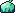
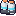
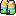
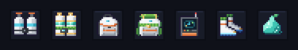
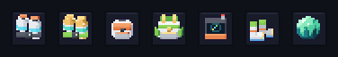
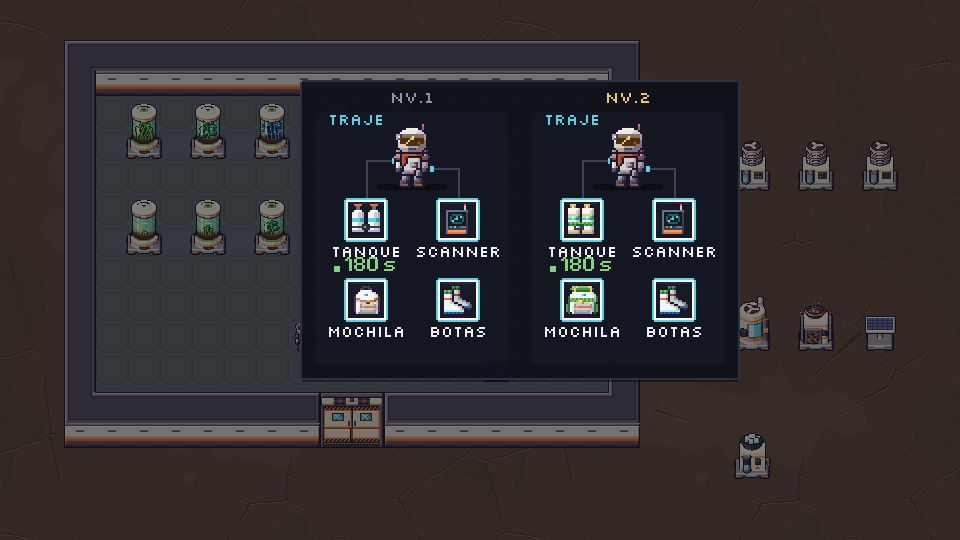
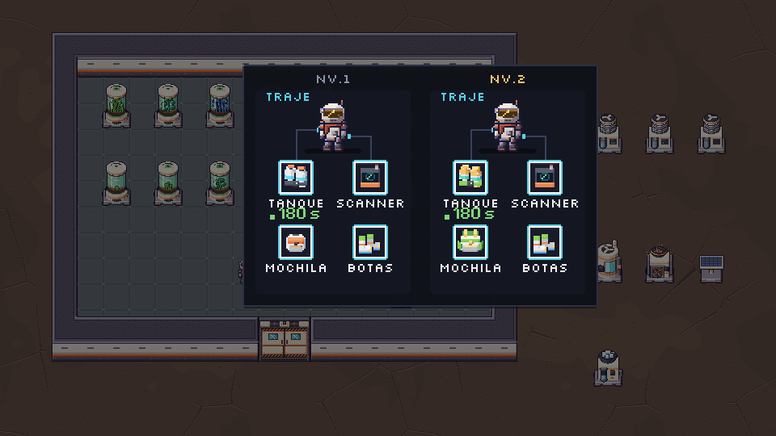
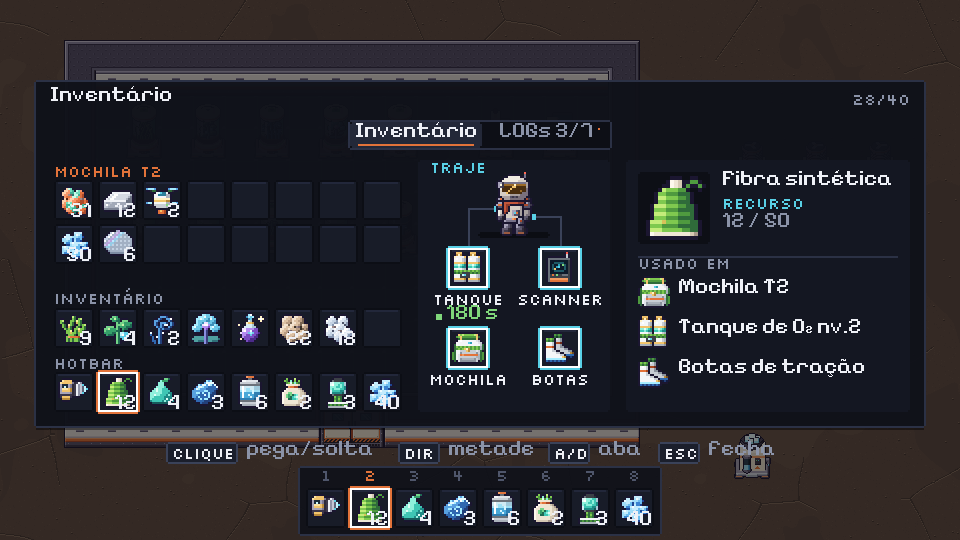
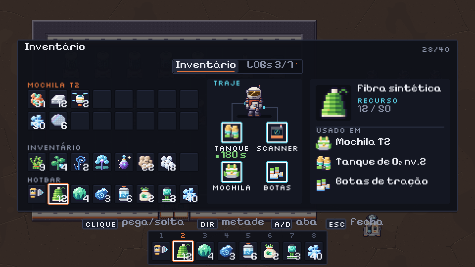

Materiais e itens · rodada 2
r3d.py: luz de cima e da esquerda, faces em tons diferentes, contorno #1b1630, linha escura entre peças). Entram aqui o tanque, a mochila e o scanner de hoje, mais os novos tanque nv.2, Mochila T2 e botas. Nada foi pro jogo. Rodada 1: v08_m5_itens. Tamanhos: todos 16×16, alpha 0/255, sem extras.1 · Gel hídrico: bola de slime
Do estilo da referência do dono eu aproveitei a esfera translúcida, o brilho em cima e à esquerda, as manchas mais escuras e a gosma clara escorrendo em pingos por cima de uma base escura. O desenho é próprio, em 16×16 e no verde-azulado da Folha-gota: gosma #86e8bc/#52cfa2 e base #1f7f86/#0f3f4a. Do lado ficam a planta de origem e os dois ícones com que o gel não pode confundir.

2 · Equipáveis com volume (r3d)
Cada um lado a lado: o atual ou o da rodada 1 (2D) → o 3D. Ampliado ×4, com o 1× do lado. Embaixo de cada um, o que ganhou ou perdeu.
Tanque de O₂ (nv.1)

Tanque de O₂ nv.2

Mochila (nv.1)
Mochila T2
Scanner
Botas de tração
Na escala do jogo (slot 20 px, Grande ×2): primeiro em 2D, depois em 3D
Ordem: tanque, tanque nv.2, mochila, Mochila T2, scanner, botas e gel.


A família nv.1 / nv.2 no cartão TRAJE (layout A)
À esquerda o traje só com nv.1 e as botas; à direita com os nv.2. Em cima a versão 2D, embaixo a 3D.


No Tab A aprovado


Em cima, os ícones 2D (de hoje e da rodada 1). Embaixo, os 3D desta rodada, com o gel de slime na hotbar.
#f2c46d no topo (tampas, válvulas, tiras e fivela) e o material novo (fibra verde, gel).Pro Dev integrar (depois do ok do dono)
- Só troca PNG, nenhum código muda.
icon_o2_tank.png,icon_backpack.pngeicon_scanner.pngjá existem no jogo: o 3D dev08_m5_itens_r2/pendentes/entra por cima, com o mesmo nome e o mesmo tamanho (16×16).icon_o2_tank_t2,icon_backpack_t2eicon_bootssão novos (rodada 1). Botas: se o dono seguir a recomendação, use o dev08_m5_itens/pendentes/icon_boots.png. icon_hydrogel.png: use o dev08_m5_itens_r2/pendentes/(slime A). O B está emcandidatas/icon_hydrogel_B.png.- O fantasma do slot vazio no TRAJE continua sendo o ícone nv.1 a alpha 45. Com o 3D, o fantasma ganha volume junto.
- Gerar de novo:
python3 tools/sprites/v08_m5_r2.py. É determinístico e só lêassets/.